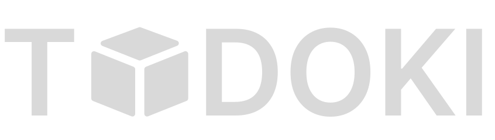

TODOKI STUDIO MEMPERSEMBAHKAN
StreetBound
KOTA MALAM
·
OPEN WORLD
·
RACING
[ PRESS ENTER ]
TEKAN ENTER DI KEYBOARD ATAU KLIK TOMBOLNYA
MCLAREN SENNA
F1 · FORMULA ONE
© 2025 TODOKI STUDIO — STREETBOUND v1.0

todoki
.
STUDIO
KLIK ATAU TEKAN ENTER UNTUK LEWATI